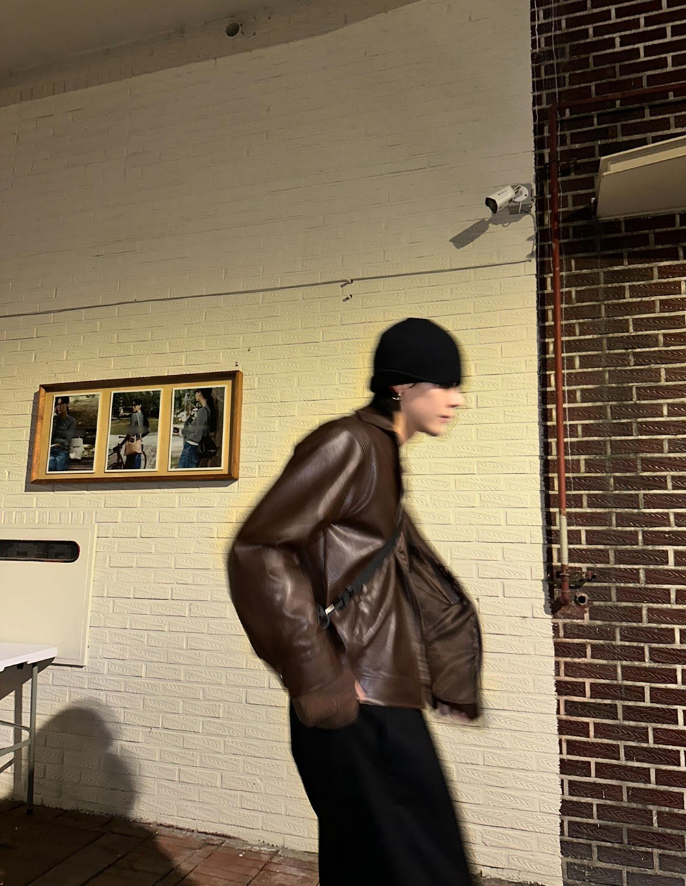
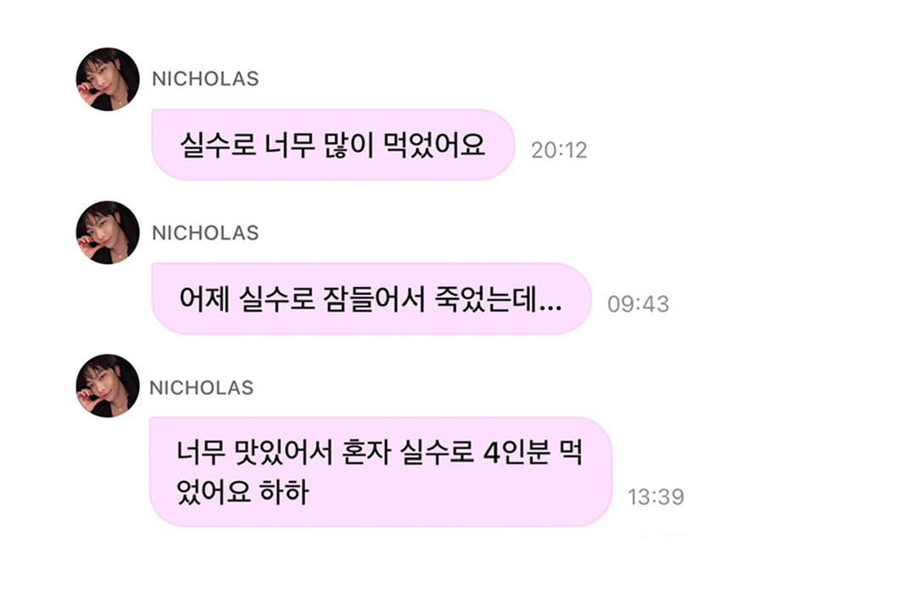
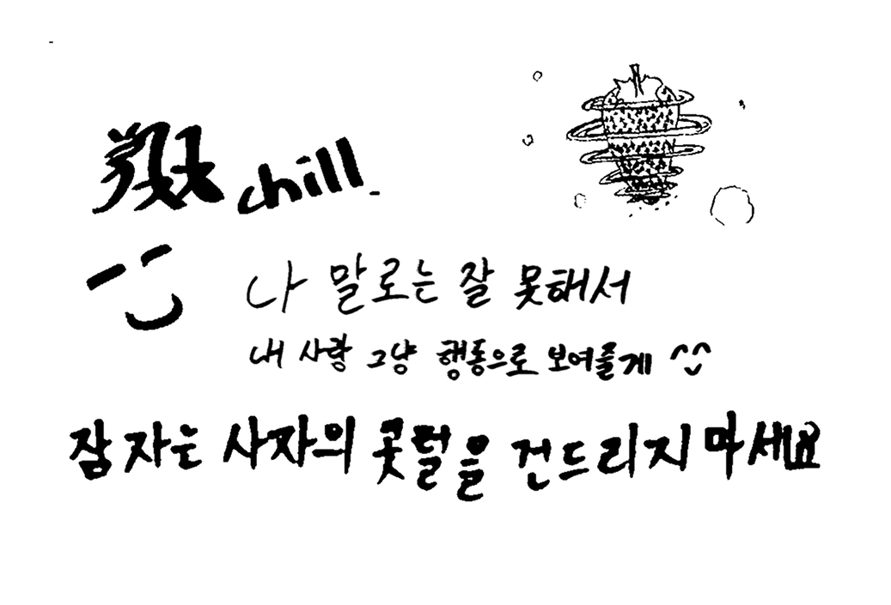

LIFE&CULTURE
그냥 생각나는 대로 말했을 뿐인데...
니콜라스: 개인적으로 옷에는 하나하나 영혼(soul)이 있다고 생각해요. 그래서 그 영혼을 먼저 알면, 어떻게 해야 더 잘 어울리는지 맞출 수 있는 것 같아요. 저는 옷이랑 제가 어울리는지 신경 쓰지 않고, 마음대로 맞춰봐요. 안 어울리는 옷이라도 밸런스를 맞추는 방식이 있잖아요? 예를 들어 튀는 핑크색을 검은색과 맞추면 밸런스가 좋아지는데, 그렇게 반대되는 걸 맞춰서 여러 스타일을 해보는 걸 좋아해요.
니콜라스: 뭔가를 의도하고 한 말은 아닌데, 많이들 재밌게 받아들여주셔서 좋아요. 굳이 조금 해명하자면, 육회 같은 경우에는 정말 ‘실수로’ 많이 먹어버린 거예요. 원래는 정말 4인분까지 먹을 생각이 없었거든요. 에디터님, 왜 웃으시는 거예요? 많이 먹으면 몸이 무거워져서 무대에서 다치기 쉬우니까 늘 신경쓰려고 노력해요. 운동도 꾸준히 하고요. 하늘에 있을 때는 마땅히 운동할 곳이 없어서 집에서 하는 편이고, 지상에 있을 때는 헬스장을 거의 매일 가요. 좀 뜬금 없는 이야기를 했네요. 죄송합니다. (웃음)
니콜라스: 하나만 고르기는 어렵지만, 가장 자신이 있는건 긍정적인 마인드일까요. (웃음) 뭔가 어려운 일이 있어도 긍정적으로 극복하는 편이에요. 이건 아무한테도 하지 않은 이야기인데, 처음 지상에 내려가는 날에는 잘할 수 있을까. 그런 생각도 들었어요. 조금 피하고 싶더라고요. 그런데 잘해야지 뭐. 긴장은 즐거움! 그렇게 생각했더니 순식간에 기분이 되게 좋아졌어요. 어차피 해야 하는 일이라면, 최대한 재밌게 하고 싶어요. 이런 마인드가 제 매력이라고 생각합니다.